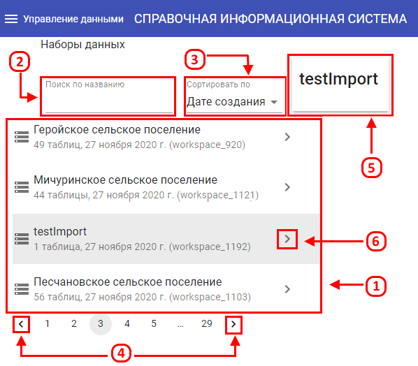
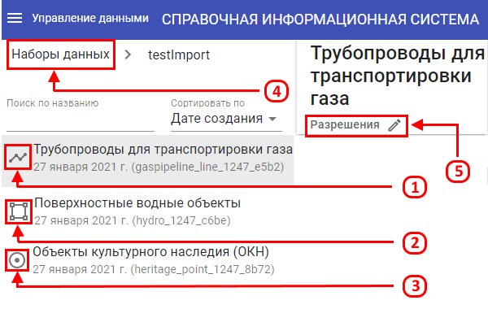
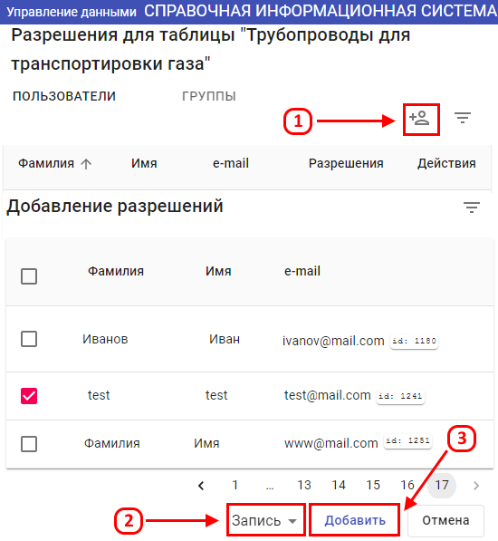

Управление данными осуществляется при выполнении следующих действий:
-
Нажать кнопки «Меню» (1) и «Управление данными» (2) в указанной последовательности.

-
На странице “Управление данными” представлен перечень наборов данных (1). Для удобства поиска необходимого набора
можно воспользоваться поиском по названию (2), сортировкой по дате создания и по количеству слоев (3).
Перелистывание можно осуществлять с помощью стрелок вправо и влево (4). В правом верхнем углу отображается
название выбранного набора данных (5). Для того, чтобы перейти к нему, необходимо нажать на стрелочку (6).

-
Слои, входящие в набор данных, имеют разный тип геометрии - линейный (1), полигональный (2) и точечный (3). Для того,
чтобы вернуться к выбору набора данных, следует нажать на кнопку “Наборы данных” (4).
Для добавления разрешений на выбранный слой необходимо нажать на кнопку “Разрешения” (5).

-
Разрешения для таблицы выбранного набора присваиваются путем добавления одного или нескольких пользователей (1).
Напротив выбранного пользователя необходимо поставить галочку, а также выбрать вид присваиваемых разрешений (2).
Нажать на кнопку “Добавить” (3), а затем “Сохранить”.
